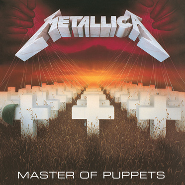

Master Of Puppets
Master of Puppets — მეტალიკას რიგით მესამე სტუდიური ალბომი, რომელიც გამოვიდა 1986 წლის 21 თებერვალს ლეიბლზე Elektra Records და მიაღწია 29-ე ადგილს ბილბორდ 200-ში. Master of Puppets ჯგუფის პირველი ოქროს ალბომი. Master of Puppets-ის ჯამში 6 მილიონზე მეტი ასლი გაიყიდა და 6 გზის მიენიჭა პლატინის სტატუსი.ეს ყველაფერი მეტალიკამ შეძლო რადიო-ეთერის გამოყენების, სინგლისა და მუსიკალური ვიდეოს გამოშვების გარეშე.
ალბომის ძირითადი თემატიკა უძლურობას და კონტროლს ეხება.
ალბომი შესულია "ყველა დროის 100 საუკეთესო ალბომში" რომელიც ჟურნალმა Times-მა გამოსცა 2006 წელს. IGN-მ ალბომი პირველ ადგილზე დაასახელა "25 საუკეთესო მეტალ ალბომი", ალბომი ასევე შესულია წიგნში "1001 ალბომი რომელიც უნდა მოისმინო სანამ ცოცხალი ხარ".
Master of Puppets არის უკანასკნელი ალბომი რომელიც მეტალიკამ კლიფ ბარტონთან ერთად ჩაწერა, რომელიც სწორედ აღნიშნული ალბომის მხარდასაჭერი ტურნეს დროს დაიღუპა. ფანების, კრიტიკოსებისა და ჯგუფის წევრების მიერ ალბომი ყველა დროის ყველაზე გავლენიან თრეშ მეტალ ალბომად არის აღიარებული.

სიმღერების სია:
ფაქტები:
- 1. Master Of Puppets იწერებოდა დანიაში და მხოლოდ ღამით.
- 2. ალბომის ქავერის პირველადი მონახაზი ჯეიმს ჰეთფილდმა დახატა.
- 3. ალბომის ქავერის ორიგინალი ნახატი 28 000$-ად გაიყიდა.
- 4. Master of Puppets-ის ბოლო 20 წამი, გიტარების შებრუნებული ჩანაწერია, ბენდის წევრების სიცილის ექოსთან ერთად.
- 5. კლიფ ბარტონის საპატივცემულოდ, ჯეიმს ჰეთფილდმა მის მარცხენა მკლავზე, Orion-ის ბასის ნოტები ამოისვირინგა.
- 6. კლიფ ბარტონის მიერ დაწერილი ბასის ინტრო Damage Inc.-ში, შთაგონებული იყო ბახის კლასიკური ნამუშევრით "Sweet Death".
- 7. ალბომის დემო ვერსიაში ბენდმა ჩაწერა სიმღერა სახელად "Only Thing" რომელიც შემდგომ ორ სიმღერად გაიყო; Welcome Home (Sanitarium) და Orion.
- 8. Battery არის პირველი სიმღერა, რომელიც მეტალიკამ რობერტ ტრუჰილოსთან ერთად დაუკრა, მისივე თხოვნის საფუძველზე.
- 9. Def Leppard-ის დრამერმა, რიკი ალენმა, ლარს ულრიხს, თავისი საყვარელი Ludwig “Black Beauty” დრამები ათხოვა.
- 10. Master of Puppets არის პირველი სიმღერა, სადაც ჯეიმს ჰეთფილდი ლიდ გიტარის მთავარ პარტიას ასრულებს.